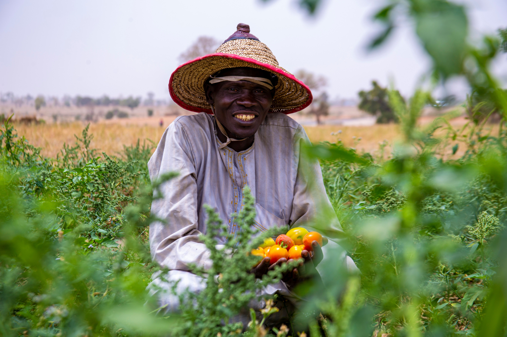

Creating a sustainable, equitable agricultural ecosystem that nourishes people and protects the planet.
Farmers Integrated
States Reached
Households Served

Velora creates value beyond processing. Its mission begins with tomatoes but extends to communities. Every harvest is an opportunity for shared prosperity. Farmers gain better income and market access. processing add value locally to strengthen Nigeria’s economy. Velora reduces food loss through efficient processing. It supports food security by making quality food accessible. Local manufacturing builds national resilience and pride. Commercial success and positive impact grow together.
Velora’s sustainability focuses on efficient, responsible growth. ESG principles guide environmental care, social value, and governance. It measures progress through transparency and accountability. Impact metrics include sourcing, jobs, and sustainability outcomes. Strong partnerships empower farmers and local industries. Job creation fuels economic and personal development. Velora envisions thriving Nigerian‑made food products. Its goal: a stronger agricultural future for Nigeria and Africa. Discipline, innovation, and collaboration drive lasting impact.